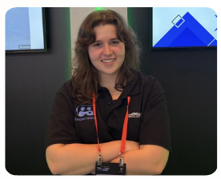
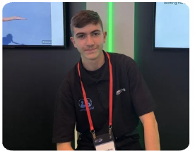
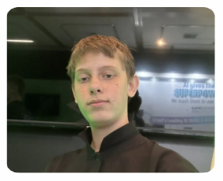
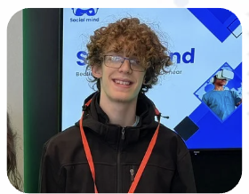

Why it exists
Many students avoid social moments quietly. Practice should be possible before the real moment.
SocialMind is a youth-led initiative founded by high-school students, combining technology, AI, VR, and education with a careful school-focused product direction.
SocialMind exists to give students a safer way to practice social moments and to give schools a clearer, more supportive practice layer.
Many students avoid social moments quietly. Practice should be possible before the real moment.
Build with student dignity, educator judgment, and transparent boundaries.
Use AI and optional VR where they support practice, not as a substitute for people.
A student-led team combining product development, AI, psychology, business strategy, and immersive technology.

CEO · AI & Psychology Lead

Business & Strategy Lead

Product & VR Developer

VR & Technical Developer
The current website mentions StartCup AI, SAGE World Cup, and an international startup competition in Georgia. Final wording should be verified before launch.
Mentioned in existing materials as part of SocialMind progress.
Mentioned in existing materials as an international presentation context.
Mentioned in existing materials and should be fact-checked for exact public wording.
Schools should request a demo. Partners and general inquiries can contact the team.